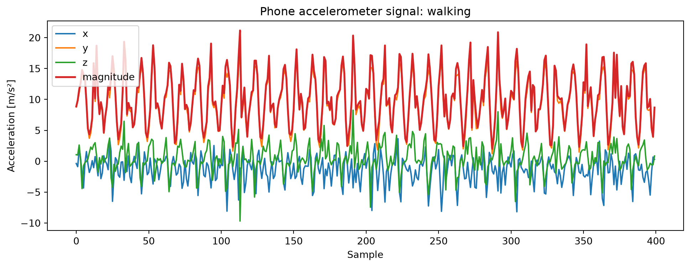
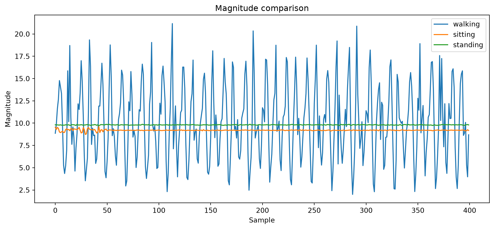
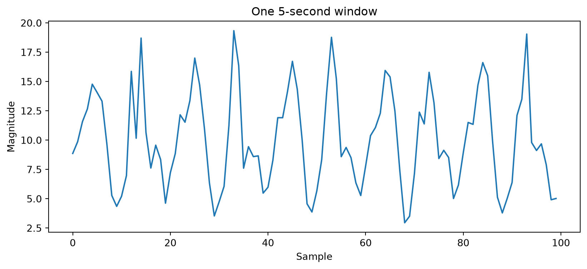
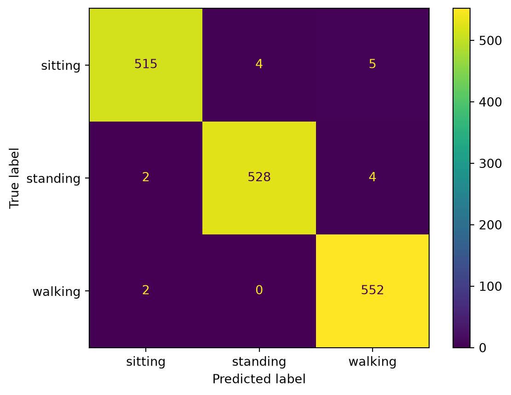
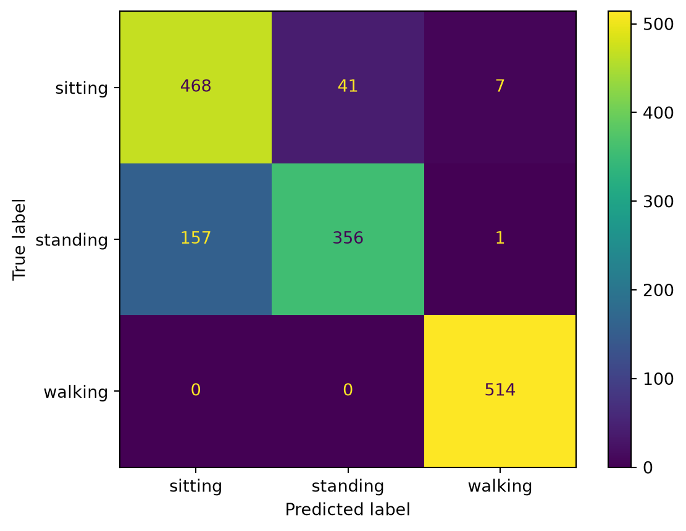

from pathlib import Path
import joblib
import numpy as np
import pandas as pd
import matplotlib.pyplot as plt
from sklearn.ensemble import RandomForestClassifier
from sklearn.metrics import (
accuracy_score,
classification_report,
ConfusionMatrixDisplay,
)
from sklearn.model_selection import train_test_splitDE4W Capstone Project
Workbook 1: Training an Activity Recognition Model
Welcome
Welcome to the DE4W Capstone Project.
In this workbook, we build the training pipeline for a live activity recognition system.
The full system follows this pipeline:
Raw Sensor Data
→ Windowing
→ Feature Engineering
→ Machine Learning
→ Evaluation
→ Model Export
→ API
→ Dashboard
→ Live PredictionLearning Objectives
After completing this workbook, you should be able to:
- load and inspect wearable sensor data
- understand smartphone accelerometer measurements
- convert continuous sensor streams into fixed-size windows
- extract statistical features from time-series windows
- train a Random Forest classifier
- compare random splits and subject-wise splits
- export a trained model for later deployment
Project Story
Imagine you joined a small digital health startup.
Your task is to build an application that recognizes whether a person is:
- walking
- sitting
- standing
using only the smartphone accelerometer.
The system should eventually work in real time.
Mission 1: Understand the Dataset
Goal
Before training a machine learning model, we first need to understand the data.
In this section we will:
- locate the raw WISDM phone accelerometer files
- load all participant files
- map activity codes to readable labels
- focus on walking, sitting and standing
Imports and Project Paths
PROJECT_ROOT = Path.cwd().parents[1] if Path.cwd().name == "workbooks" else Path.cwd()
DATA_DIR = PROJECT_ROOT / "data"
MODEL_DIR = PROJECT_ROOT / "models"
MODEL_DIR.mkdir(exist_ok=True)
print("Project root:", PROJECT_ROOT)
print("Data directory:", DATA_DIR)
print("Model directory:", MODEL_DIR)Project root: /Users/konak/HPI/Vorlesungen/Data Engineering for Wearables SS2026/Mini-Project/de4w_activity_app
Data directory: /Users/konak/HPI/Vorlesungen/Data Engineering for Wearables SS2026/Mini-Project/de4w_activity_app/data
Model directory: /Users/konak/HPI/Vorlesungen/Data Engineering for Wearables SS2026/Mini-Project/de4w_activity_app/modelsActivity Mapping
The WISDM raw files use single-letter activity codes.
ACTIVITY_MAP = {
"A": "walking",
"B": "jogging",
"C": "stairs",
"D": "sitting",
"E": "standing",
"F": "typing",
"G": "brushing_teeth",
"H": "eating_soup",
"I": "eating_chips",
"J": "eating_pasta",
"K": "drinking",
"L": "eating_sandwich",
"M": "kicking",
"O": "catch",
"P": "dribbling",
"Q": "writing",
"R": "clapping",
"S": "folding_clothes",
}
TARGET_ACTIVITIES = ["walking", "sitting", "standing"]Load One WISDM File
Each raw file has the following structure:
subject_id, activity_code, timestamp, x, y, z;def load_single_wisdm_file(file_path: Path) -> pd.DataFrame:
"""
Load one WISDM phone accelerometer file.
Parameters
----------
file_path:
Path to one raw WISDM phone accelerometer text file.
Returns
-------
pandas.DataFrame
DataFrame with subject_id, activity_code, timestamp, x, y, z and activity.
"""
df = pd.read_csv(
file_path,
header=None,
names=["subject_id", "activity_code", "timestamp", "x", "y", "z"],
sep=",",
)
df["z"] = (
df["z"]
.astype(str)
.str.replace(";", "", regex=False)
.astype(float)
)
df["activity"] = df["activity_code"].map(ACTIVITY_MAP)
return dfLoad All Participant Files
def load_wisdm_phone_accel(
data_dir: Path,
target_activities: list[str] | None = None,
) -> pd.DataFrame:
"""
Load all WISDM phone accelerometer files from a directory.
"""
files = sorted(data_dir.glob("data_*_accel_phone.txt"))
if not files:
raise FileNotFoundError(
f"No WISDM phone accelerometer files found in {data_dir}."
)
dataframes = []
for file_path in files:
df_file = load_single_wisdm_file(file_path)
if target_activities is not None:
df_file = df_file[df_file["activity"].isin(target_activities)]
dataframes.append(df_file)
return pd.concat(dataframes, ignore_index=True)df = load_wisdm_phone_accel(
DATA_DIR,
target_activities=TARGET_ACTIVITIES,
)
df.head()| subject_id | activity_code | timestamp | x | y | z | activity | |
|---|---|---|---|---|---|---|---|
| 0 | 1600 | A | 252207666810782 | -0.364761 | 8.793503 | 1.055084 | walking |
| 1 | 1600 | A | 252207717164786 | -0.879730 | 9.768784 | 1.016998 | walking |
| 2 | 1600 | A | 252207767518790 | 2.001495 | 11.109070 | 2.619156 | walking |
| 3 | 1600 | A | 252207817872794 | 0.450623 | 12.651642 | 0.184555 | walking |
| 4 | 1600 | A | 252207868226798 | -2.164352 | 13.928436 | -4.422485 | walking |
df.shape(814013, 7)df["activity"].value_counts()activity
walking 279817
standing 269604
sitting 264592
Name: count, dtype: int64df["subject_id"].nunique()51Checkpoint 1
At this point, you should be able to answer:
- What does one row in the raw WISDM file represent?
- Why do we focus on only three activities first?
- Why is it useful that the dataset contains subject identifiers?
- Why should we inspect the class distribution before training a model?
Mission 2: Understand the Signal
Goal
We now inspect the accelerometer signal and compute the acceleration magnitude.
The magnitude combines all three axes:
\[ m = \sqrt{x^2 + y^2 + z^2} \]
Add Magnitude
df["magnitude"] = np.sqrt(
df["x"] ** 2 + df["y"] ** 2 + df["z"] ** 2
)
df.head()| subject_id | activity_code | timestamp | x | y | z | activity | magnitude | |
|---|---|---|---|---|---|---|---|---|
| 0 | 1600 | A | 252207666810782 | -0.364761 | 8.793503 | 1.055084 | walking | 8.864082 |
| 1 | 1600 | A | 252207717164786 | -0.879730 | 9.768784 | 1.016998 | walking | 9.860900 |
| 2 | 1600 | A | 252207767518790 | 2.001495 | 11.109070 | 2.619156 | walking | 11.587812 |
| 3 | 1600 | A | 252207817872794 | 0.450623 | 12.651642 | 0.184555 | walking | 12.661010 |
| 4 | 1600 | A | 252207868226798 | -2.164352 | 13.928436 | -4.422485 | walking | 14.773088 |
Plot One Activity
activity = "walking"
sample = (
df[df["activity"] == activity]
.head(400)
.reset_index(drop=True)
)
plt.figure(figsize=(12, 4))
plt.plot(sample["x"], label="x")
plt.plot(sample["y"], label="y")
plt.plot(sample["z"], label="z")
plt.plot(sample["magnitude"], label="magnitude", linewidth=2)
plt.title(f"Phone accelerometer signal: {activity}")
plt.xlabel("Sample")
plt.ylabel("Acceleration [m/s²]")
plt.legend()
plt.show()
Compare Activities
plt.figure(figsize=(12, 5))
for activity in TARGET_ACTIVITIES:
signal = (
df[df["activity"] == activity]["magnitude"]
.head(400)
.reset_index(drop=True)
)
plt.plot(signal, label=activity)
plt.title("Magnitude comparison")
plt.xlabel("Sample")
plt.ylabel("Magnitude")
plt.legend()
plt.show()
Estimate Sampling Rate
subject = df["subject_id"].iloc[0]
activity = "walking"
sample = df[
(df["subject_id"] == subject)
& (df["activity"] == activity)
].sort_values("timestamp")
dt = sample["timestamp"].diff().dropna()
sampling_rate = 1e9 / dt.mean()
sampling_ratenp.float64(19.85939378331699)Checkpoint 2
- Why does the accelerometer not show zero acceleration when the phone is still?
- What is the magnitude?
- Why can magnitude be useful for activity recognition?
- Why is sampling rate important for windowing?
Mission 3: Create Windows
Goal
We convert the continuous sensor stream into fixed-size windows.
In this project we use:
100 samples ≈ 5 secondsbecause the sampling rate is approximately 20 Hz.
WINDOW_SIZE = 100def create_windows(
df: pd.DataFrame,
window_size: int = WINDOW_SIZE,
) -> list[pd.DataFrame]:
"""
Split a DataFrame into non-overlapping windows.
"""
windows = []
for start in range(0, len(df) - window_size, window_size):
end = start + window_size
windows.append(df.iloc[start:end])
return windowsTest Windowing
walking_df = df[df["activity"] == "walking"].copy()
windows = create_windows(walking_df, window_size=WINDOW_SIZE)
len(windows)2798window = windows[0]
plt.figure(figsize=(10, 4))
plt.plot(window["magnitude"])
plt.title("One 5-second window")
plt.xlabel("Sample")
plt.ylabel("Magnitude")
plt.show()
Checkpoint 3
- Why do we need windows?
- How many seconds are represented by 100 samples at 20 Hz?
- What is the trade-off between small and large windows?
- Why might live predictions not change immediately when the activity changes?
Mission 4: Extract Features
Goal
We transform each sensor window into a numerical feature vector.
For each signal:
x, y, z, magnitudewe compute:
mean, std, min, max, energyThis yields:
[ 4 = 20 ]
features.
def extract_features(window: pd.DataFrame) -> dict[str, float]:
"""
Extract statistical features from one accelerometer window.
"""
features = {}
for axis in ["x", "y", "z", "magnitude"]:
signal = window[axis]
features[f"mean_{axis}"] = float(signal.mean())
features[f"std_{axis}"] = float(signal.std())
features[f"min_{axis}"] = float(signal.min())
features[f"max_{axis}"] = float(signal.max())
features[f"energy_{axis}"] = float(np.sum(signal ** 2))
return featuresTest Feature Extraction
features = extract_features(windows[0])
pd.Series(features)mean_x -1.000110
std_x 1.892580
min_x -6.492264
max_x 3.651398
energy_x 454.626037
mean_y 9.619472
std_y 3.986348
min_y 2.684174
max_y 18.676529
energy_y 10826.630357
mean_z 0.340593
std_z 2.082760
min_z -4.935730
max_z 6.472199
energy_z 441.051585
mean_magnitude 10.036322
std_magnitude 4.081904
min_magnitude 2.954282
max_magnitude 19.337960
energy_magnitude 11722.307978
dtype: float64len(features)20Convert All Windows to Features
def windows_to_features(
df: pd.DataFrame,
window_size: int = WINDOW_SIZE,
) -> pd.DataFrame:
"""
Convert raw sensor data into a feature table.
"""
rows = []
for activity in TARGET_ACTIVITIES:
activity_df = df[df["activity"] == activity]
for subject_id in sorted(activity_df["subject_id"].unique()):
subject_df = activity_df[
activity_df["subject_id"] == subject_id
].sort_values("timestamp")
windows = create_windows(subject_df, window_size=window_size)
for window in windows:
feature_row = extract_features(window)
feature_row["activity"] = activity
feature_row["subject_id"] = subject_id
rows.append(feature_row)
return pd.DataFrame(rows)features_df = windows_to_features(df, window_size=WINDOW_SIZE)
features_df.head()| mean_x | std_x | min_x | max_x | energy_x | mean_y | std_y | min_y | max_y | energy_y | ... | min_z | max_z | energy_z | mean_magnitude | std_magnitude | min_magnitude | max_magnitude | energy_magnitude | activity | subject_id | |
|---|---|---|---|---|---|---|---|---|---|---|---|---|---|---|---|---|---|---|---|---|---|
| 0 | -1.000110 | 1.892580 | -6.492264 | 3.651398 | 454.626037 | 9.619472 | 3.986348 | 2.684174 | 18.676529 | 10826.630357 | ... | -4.935730 | 6.472199 | 441.051585 | 10.036322 | 4.081904 | 2.954282 | 19.337960 | 11722.307978 | walking | 1600 |
| 1 | -1.344509 | 2.100092 | -8.082993 | 2.628891 | 617.398405 | 9.521806 | 4.066769 | 1.647736 | 18.787323 | 10703.800290 | ... | -9.686493 | 8.261765 | 613.495476 | 10.067197 | 4.263836 | 2.317188 | 21.165828 | 11934.694171 | walking | 1600 |
| 2 | -1.513662 | 2.453901 | -8.111908 | 3.641586 | 825.258859 | 9.580595 | 4.107310 | 1.222855 | 18.672226 | 10848.909078 | ... | -7.444763 | 8.010345 | 617.453834 | 10.205469 | 4.353638 | 2.008688 | 20.879614 | 12291.621772 | walking | 1600 |
| 3 | -1.496280 | 2.116861 | -8.181854 | 3.257019 | 667.514539 | 9.551068 | 4.078216 | 1.483902 | 18.526184 | 10768.842824 | ... | -6.522125 | 4.545944 | 418.363595 | 10.028709 | 4.260721 | 2.306182 | 18.917277 | 11854.720957 | walking | 1600 |
| 4 | -1.644037 | 2.244849 | -8.546417 | 5.301727 | 769.181090 | 9.362707 | 3.838999 | 1.363663 | 18.914047 | 10225.081870 | ... | -6.078949 | 6.125534 | 548.564670 | 9.976820 | 4.006477 | 1.887441 | 18.943003 | 11542.827630 | walking | 1600 |
5 rows × 22 columns
features_df.shape(8060, 22)features_df["activity"].value_counts()activity
walking 2772
standing 2670
sitting 2618
Name: count, dtype: int64features_df.isna().sum().sum()np.int64(0)features_df.to_csv(
DATA_DIR / "features_df.csv",
index=False,
)Checkpoint 4
- Why do we extract features from windows?
- Why might standard deviation help distinguish walking from standing?
- What does energy measure?
- Why must training and deployment use the same feature extraction function?
Mission 5: Train a Machine Learning Model
Goal
We train a Random Forest classifier to recognize walking, sitting and standing.
Prepare X and y
feature_columns = [
column
for column in features_df.columns
if column not in ["activity", "subject_id"]
]
X = features_df[feature_columns]
y = features_df["activity"]
X.shape, y.shape((8060, 20), (8060,))Random Train/Test Split
X_train, X_test, y_train, y_test = train_test_split(
X,
y,
test_size=0.2,
random_state=42,
stratify=y,
)rf = RandomForestClassifier(
n_estimators=200,
random_state=42,
)
rf.fit(X_train, y_train)RandomForestClassifier(n_estimators=200, random_state=42)In a Jupyter environment, please rerun this cell to show the HTML representation or trust the notebook.
On GitHub, the HTML representation is unable to render, please try loading this page with nbviewer.org.
Parameters
Fitted attributes
y_pred = rf.predict(X_test)
random_split_accuracy = accuracy_score(y_test, y_pred)
random_split_accuracy0.989454094292804print(classification_report(y_test, y_pred)) precision recall f1-score support
sitting 0.99 0.98 0.99 524
standing 0.99 0.99 0.99 534
walking 0.98 1.00 0.99 554
accuracy 0.99 1612
macro avg 0.99 0.99 0.99 1612
weighted avg 0.99 0.99 0.99 1612
ConfusionMatrixDisplay.from_estimator(
rf,
X_test,
y_test,
)
plt.show()
Checkpoint 5
- Why is Random Forest a good baseline?
- What does accuracy measure?
- What does the confusion matrix show?
- Why might a random split be too optimistic?
Mission 6: Evaluate Generalization
Goal
We evaluate whether the model generalizes to unseen subjects.
subjects = features_df["subject_id"].unique()
train_subjects, test_subjects = train_test_split(
subjects,
test_size=0.2,
random_state=42,
)
train_df = features_df[features_df["subject_id"].isin(train_subjects)].copy()
test_df = features_df[features_df["subject_id"].isin(test_subjects)].copy()X_train_subject = train_df[feature_columns]
y_train_subject = train_df["activity"]
X_test_subject = test_df[feature_columns]
y_test_subject = test_df["activity"]rf_subject = RandomForestClassifier(
n_estimators=200,
random_state=42,
)
rf_subject.fit(X_train_subject, y_train_subject)RandomForestClassifier(n_estimators=200, random_state=42)In a Jupyter environment, please rerun this cell to show the HTML representation or trust the notebook.
On GitHub, the HTML representation is unable to render, please try loading this page with nbviewer.org.
Parameters
Fitted attributes
y_pred_subject = rf_subject.predict(X_test_subject)
subject_split_accuracy = accuracy_score(y_test_subject, y_pred_subject)
subject_split_accuracy0.866580310880829print(classification_report(y_test_subject, y_pred_subject)) precision recall f1-score support
sitting 0.75 0.91 0.82 516
standing 0.90 0.69 0.78 514
walking 0.98 1.00 0.99 514
accuracy 0.87 1544
macro avg 0.88 0.87 0.86 1544
weighted avg 0.88 0.87 0.86 1544
ConfusionMatrixDisplay.from_estimator(
rf_subject,
X_test_subject,
y_test_subject,
)
plt.show()
Compare Both Evaluation Strategies
print("Random split accuracy:", random_split_accuracy)
print("Subject-wise split accuracy:", subject_split_accuracy)Random split accuracy: 0.989454094292804
Subject-wise split accuracy: 0.866580310880829Checkpoint 6
- Why is subject-wise evaluation more realistic?
- Why is random split accuracy often higher?
- Why are sitting and standing harder to distinguish than walking?
- What does this tell us about deployment?
Mission 7: Export the Model
Goal
We export the trained model and metadata for later deployment.
joblib.dump(
rf_subject,
MODEL_DIR / "activity_model_random_forest.joblib",
)
joblib.dump(
feature_columns,
MODEL_DIR / "feature_columns.joblib",
)
activity_labels = sorted(features_df["activity"].unique())
joblib.dump(
activity_labels,
MODEL_DIR / "activity_labels.joblib",
)['/Users/konak/HPI/Vorlesungen/Data Engineering for Wearables SS2026/Mini-Project/de4w_activity_app/models/activity_labels.joblib']Test Exported Model
loaded_model = joblib.load(MODEL_DIR / "activity_model_random_forest.joblib")
loaded_feature_columns = joblib.load(MODEL_DIR / "feature_columns.joblib")
sample_row = X_test_subject.iloc[[0]]
prediction = loaded_model.predict(sample_row[loaded_feature_columns])
predictionarray(['walking'], dtype=object)pd.DataFrame(
loaded_model.predict_proba(sample_row[loaded_feature_columns]),
columns=loaded_model.classes_,
)| sitting | standing | walking | |
|---|---|---|---|
| 0 | 0.01 | 0.0 | 0.99 |
Final Checkpoint
You should now be able to explain the complete training pipeline:
Raw WISDM data
→ Magnitude
→ Windowing
→ Feature extraction
→ Feature table
→ Random Forest
→ Subject-wise evaluation
→ Model exportFinal Reflection
The next part of the project turns this trained model into a deployed system:
Model Export
→ FastAPI
→ Streamlit
→ phyphox
→ Live Prediction